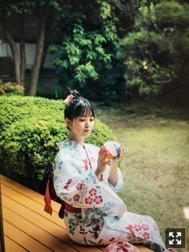
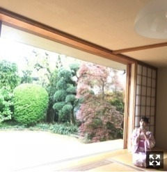

2018/0612Tueかき氷たべたくなる
今日発売 ar のオフショット載せます！


#彼女と浴衣デートなう
に使ってね♡
個人的にも浴衣などの和服が好きなので
色んなかわいい浴衣が着れて
嬉しかった〜
夏を先取りしちゃいました♪
誌面では色んな浴衣がみれるので
ぜひ！！みてね
皆さんはどの浴衣がお好き？？
2018/06/12 17:24
コメント(406)
和服が似合う女性って綺麗だよね。
ホントに未央奈は綺麗だ。
それはきっと心が綺麗だからだと思う。
いつまでもその綺麗な心を忘れないでな。
なんか未央奈を見ていたらドキドキしてきたぜ。
もしかしたら未央奈に恋をしてるのかもしれない。
どうすればいいんだろう？ヽ(・∀・)ノ
ホントに未央奈は綺麗だ。
それはきっと心が綺麗だからだと思う。
いつまでもその綺麗な心を忘れないでな。
なんか未央奈を見ていたらドキドキしてきたぜ。
もしかしたら未央奈に恋をしてるのかもしれない。
どうすればいいんだろう？ヽ(・∀・)ノ
さいこーー！！
未央奈 こんにちは！
ar 買ったよ！
なんでだろうね、浴衣見るとワクワク、ドキドキするのって。
夏だから？日本人だから？不思議な魅力あるよね。
清楚な白も、麗しの藍も、桃色も、水色も、古典柄も、レトロモダンも、みーーんな可愛いスギ‼️
梅雨だねー。
紫陽花の花が輝く季節。
梅雨は、嫌われがちな季節だけど、
楽しみも有り、大事な季節。
梅雨が来なかったら夏を楽しめ無いからね。
未央奈は未央奈のままで、
最高の笑顔を！
ar 買ったよ！
なんでだろうね、浴衣見るとワクワク、ドキドキするのって。
夏だから？日本人だから？不思議な魅力あるよね。
清楚な白も、麗しの藍も、桃色も、水色も、古典柄も、レトロモダンも、みーーんな可愛いスギ‼️
梅雨だねー。
紫陽花の花が輝く季節。
梅雨は、嫌われがちな季節だけど、
楽しみも有り、大事な季節。
梅雨が来なかったら夏を楽しめ無いからね。
未央奈は未央奈のままで、
最高の笑顔を！
ブログ書いた日からコメントしてんだけど反映されないからオコ。
とりあえずブログ更新率高くてホント嬉しい(*´꒳`*)❤️
浴衣可愛いね❤️
またブログ楽しみに待ってるよ❤️
とりあえずブログ更新率高くてホント嬉しい(*´꒳`*)❤️
浴衣可愛いね❤️
またブログ楽しみに待ってるよ❤️
未央奈！(*´꒳`*)
お昼休みにar買ってきたよー！！早く帰って見なきゃです！！

お昼休みにar買ってきたよー！！早く帰って見なきゃです！！
未央奈ちゃん、こんにちは。
浴衣姿いいですね(*^o^*)。僕は一枚目の画像？写真？が一番好きです。
画像が大きくならない(6月13日13時40分時点)のが残念。前のはちゃんとなるのになんでかな？
浴衣姿いいですね(*^o^*)。僕は一枚目の画像？写真？が一番好きです。
画像が大きくならない(6月13日13時40分時点)のが残念。前のはちゃんとなるのになんでかな？
みおちゃん こんにちは！
こんにちは！
ブログ更新ありがとう＼(^o^)／
オフショットありがとう～
どの浴衣も似合ってて可愛い
浴衣姿見ると、かき氷食べたくなってくるね

今日も暑いけど体調に気を付けてね
ブログ更新ありがとう＼(^o^)／
オフショットありがとう～
どの浴衣も似合ってて可愛い
浴衣姿見ると、かき氷食べたくなってくるね
今日も暑いけど体調に気を付けてね
和が似合いますね。
ﾀﾞｲﾁｭｷです
未央奈の浴衣はどれも好きだ！
浴衣姿かわいすぎる！！
花火大会行くとしたらメンバーで誰といきたい？
花火大会行くとしたらメンバーで誰といきたい？
未央奈さん今朝は早起きだったね
お腹が空いて起きた朝って今日は何を食べようか
ワクワクする気持ち分かります
そしてブログ更新ありがとう
お題の件だけどこういったイメージが浮かんだ
1枚目お見合い
2枚目縁日の夏祭り
3枚目温泉旅行
4枚目花火大会の待ち合わせ
5枚目お化け屋敷で肝試し
どれか迷うけど一番行きたいのは夏祭り！
なので2番ってことになるかな
そうだ！ここで質問
「夏のイベントで一番好きなのは？」
なぜか夏の思い出が春夏秋冬で一番記憶に
残ってる
こんにちは
沢山のメッセージ書いたのに、エラーで投稿できませんでした
なので、簡潔に言いますね
浴衣の未央奈ちゃん、最高に可愛いです☺️
全部、超絶、可愛くてお似合いです☺️
自分は、淡色でシンプルな柄の浴衣が好きです
なので、黄色✖︎七宝柄の浴衣を着ている未央奈ちゃんが、とても良いなぁって思います
沢山のメッセージ書いたのに、エラーで投稿できませんでした
なので、簡潔に言いますね
浴衣の未央奈ちゃん、最高に可愛いです☺️
全部、超絶、可愛くてお似合いです☺️
自分は、淡色でシンプルな柄の浴衣が好きです
なので、黄色✖︎七宝柄の浴衣を着ている未央奈ちゃんが、とても良いなぁって思います
未央奈さん、ホントに和風美人ですね。
猛暑でも、浴衣の女性を見ると清涼感を感じます。
今日もレコメン聴きます！
猛暑でも、浴衣の女性を見ると清涼感を感じます。
今日もレコメン聴きます！
ブログ更新ありがとう
未央奈ちゃんと縁側の組み合わせは
最高ですね！
どれも涼しげなイメージで
まるで風に揺れる夏の風鈴や
軽やかに泳いでいる金魚みたいな
風流な夏を感じさせてくれます
未央奈ちゃんと縁側の組み合わせは
最高ですね！
どれも涼しげなイメージで
まるで風に揺れる夏の風鈴や
軽やかに泳いでいる金魚みたいな
風流な夏を感じさせてくれます
みおなー
みおなの画像だけ大きくして見れないよー
みおなの画像だけ大きくして見れないよー
堀さん、こんばんは♪
今回のブログの写真は１枚目のが好きです。
祭りに行ったことがないので浴衣の女性を
見たことがありません＞＜
今日は、コンビニに行きましたがarはなかったです。
少年マガジンというマンガ雑誌に欅坂さんの
菅井さんの写真がありました。
ではまたコメントしますね☆
今回のブログの写真は１枚目のが好きです。
祭りに行ったことがないので浴衣の女性を
見たことがありません＞＜
今日は、コンビニに行きましたがarはなかったです。
少年マガジンというマンガ雑誌に欅坂さんの
菅井さんの写真がありました。
ではまたコメントしますね☆
こんばんは、お疲れさま。
今朝は涼しかった。
出勤するとき思ったよ。
浴衣、夏やね！
1枚目3枚目かな？
爽やかと藍色。
綺麗で似合っとうよ。
堀ちゃんなら夏祭り行ったらどんな夜店行きたいんかな？
夜店懐かしい。
めっちゃ好きで行ってたよ(笑)
欅ちゃんのずーみんちゃんのブログにarの撮影楽しいって書いてあったよ。
機会があればツーショット希望します！
ではでは。
またね、堀ちゃん。
体調気をつけてください。
頑張りや！
今朝は涼しかった。
出勤するとき思ったよ。
浴衣、夏やね！
1枚目3枚目かな？
爽やかと藍色。
綺麗で似合っとうよ。
堀ちゃんなら夏祭り行ったらどんな夜店行きたいんかな？
夜店懐かしい。
めっちゃ好きで行ってたよ(笑)
欅ちゃんのずーみんちゃんのブログにarの撮影楽しいって書いてあったよ。
機会があればツーショット希望します！
ではでは。
またね、堀ちゃん。
体調気をつけてください。
頑張りや！
かき氷食べて頭キーンってやりたい！
写真が多くて嬉しい
個人的には1枚目と3枚目の浴衣の柄が可愛くて好きだなー☺️
写真が多くて嬉しい
個人的には1枚目と3枚目の浴衣の柄が可愛くて好きだなー☺️
おつかれさま
浴衣姿は全部最高だよ！
一番と言うなら最初のかな
浴衣姿は全部最高だよ！
一番と言うなら最初のかな
こんばんは！
僕は3枚目の写真が好きだな
未央奈にそんな風に見られたら、ドキッとするよ(笑)
浴衣着ると、清楚感増してるね
ちなみに、今日昼のラジオで真夏と桃ちゃんがしゃべってたからテンション上がった
不意討ちだったよ(笑)
それではまた！
僕は3枚目の写真が好きだな
未央奈にそんな風に見られたら、ドキッとするよ(笑)
浴衣着ると、清楚感増してるね
ちなみに、今日昼のラジオで真夏と桃ちゃんがしゃべってたからテンション上がった
不意討ちだったよ(笑)
それではまた！
未央奈ちゃんありがとうございます‼楽しみにしてます！頑張ります‼頑張って下さい！頑張ります‼大丈夫ですか？
みおなお久しぶり。元気そうだね。
いつまでも明るく透き通ったあなたでいてね。
いつまでも明るく透き通ったあなたでいてね。
いつも一緒にいるメンバーは？質問です！これからも頑張ってね！
未央奈ちゃんありがとうございます！楽しみにしてます！頑張ります‼頑張って下さい。良かったですね‼楽しみにしてます。
ar 実にいいです。
なんと浴衣姿の美しい事か。
今月号のベストグラビアだと断言します。
やはり未央奈さんは、特に和装美人です。
最高の称号です。
ちなみに、浴衣は、古典柄のくすんだネイビーの下地、花模様の
団扇の未央奈さんに、ビビビ と来ました。
表情が特にいいです。
やはり古典柄が、合うかな。と思います。
ar 今月号、絶賛未央奈さん中です。
未央奈浴衣すごい似合う！
どの浴衣も似合うしかわいいし(*´ｰ`*)
2枚目の浴衣すきかな〜
未央奈だいすきだよ！！
どの浴衣も似合うしかわいいし(*´ｰ`*)
2枚目の浴衣すきかな〜
未央奈だいすきだよ！！
みおなちゃん更新ありがとう╰(*´︶`*)╯♡
オフショットありがと〜ヾ(๑╹◡╹)ﾉ"
どの浴衣も似合ってるねー（╹◡╹）♡
全部良いけど1枚目の浴衣が特に好きです(*´-`)
オフショットありがと〜ヾ(๑╹◡╹)ﾉ"
どの浴衣も似合ってるねー（╹◡╹）♡
全部良いけど1枚目の浴衣が特に好きです(*´-`)
和装も似合うね～。この姿にはかき氷が凄く似合うね！
未央奈、こんばんは。
浴衣姿の未央奈を見たくてまたコメントしたよ。
俺は3枚目の写真がお気に入りです。
浴衣姿の未央奈を見たくてまたコメントしたよ。
俺は3枚目の写真がお気に入りです。
ブログの更新ありがとう
arは毎号買ってるけど、
今回は未央奈の浴衣姿が見れるということで、
いつも以上に楽しみにしてたけど・・・
未央奈の浴衣姿は予想以上に似合ってたし、大人っぽい和美人の未央奈にビックリしたよ。
一番のお気に入りは、3番目の紺の浴衣かな。
古風で落ち着きのある浴衣が未央奈良の大人っぽさ・綺麗さを際立てていると思うから「3番目の紺の浴衣」が一番のお気に入りだよ。
是非、握手会でも未央奈に浴衣を着てほしいな。
ゴロ～
arは毎号買ってるけど、
今回は未央奈の浴衣姿が見れるということで、
いつも以上に楽しみにしてたけど・・・
未央奈の浴衣姿は予想以上に似合ってたし、大人っぽい和美人の未央奈にビックリしたよ。
一番のお気に入りは、3番目の紺の浴衣かな。
古風で落ち着きのある浴衣が未央奈良の大人っぽさ・綺麗さを際立てていると思うから「3番目の紺の浴衣」が一番のお気に入りだよ。
是非、握手会でも未央奈に浴衣を着てほしいな。
ゴロ～
今日も一日お疲れ様でございます
ar
明日自宅に届きます
自分は3枚目の濃い青の浴衣姿が好きです^ ^
いい夏を迎えれそうですね
すごい素敵な場所での撮影だったんですかね？
届いたらゆっくり見ます^ ^
見て仕事頑張ります‼︎
今日レコメン顔だけ総選挙ですね
楽しみです^ ^
お仕事たまには力抜いて下さいね
ar
明日自宅に届きます
自分は3枚目の濃い青の浴衣姿が好きです^ ^
いい夏を迎えれそうですね
すごい素敵な場所での撮影だったんですかね？
届いたらゆっくり見ます^ ^
見て仕事頑張ります‼︎
今日レコメン顔だけ総選挙ですね
楽しみです^ ^
お仕事たまには力抜いて下さいね
やぁ(・∀・)ノ未央奈ちゃん♡こんばんは！
りょーへー(R.N.イナダウアーびーむ)だよ♪
朝の755、なんて可愛いエピソード♡ 世界中の食べ物を独り占め、それってめちゃくちゃ幸せなことやん！にしても、オムライスしか食べられなかったなんて…！今日は美味しいもの食べられた？
レコメン！顔だけ総選挙、3位おめでとう！嬉しいよ！何だろう、ラジオ番組の１コーナーのはずなのに、謎に緊張しちゃう…！笑 未央奈ちゃんがトップ3、嬉しいことですなぁ！来年は1位を目指そーう！
レコメン！楽しみっ♪
#毎日コメント
#今日もお疲れ様
#水曜日の夜ご飯は
#学食で麺類を食べることが多いよ
#蕎麦とかうどんとか
#レコメン！で
#BGMに合わせて口ずさむ未央奈ちゃん
#可愛いなぁ
#未央奈ちゃんのずっきゅん
#可愛すぎるっ
#明日も楽しみおな♡
#レコメン！はあるけど…
#おやすみおな(*・・)σ
りょーへー(R.N.イナダウアーびーむ)だよ♪
朝の755、なんて可愛いエピソード♡ 世界中の食べ物を独り占め、それってめちゃくちゃ幸せなことやん！にしても、オムライスしか食べられなかったなんて…！今日は美味しいもの食べられた？
レコメン！顔だけ総選挙、3位おめでとう！嬉しいよ！何だろう、ラジオ番組の１コーナーのはずなのに、謎に緊張しちゃう…！笑 未央奈ちゃんがトップ3、嬉しいことですなぁ！来年は1位を目指そーう！
レコメン！楽しみっ♪
#毎日コメント
#今日もお疲れ様
#水曜日の夜ご飯は
#学食で麺類を食べることが多いよ
#蕎麦とかうどんとか
#レコメン！で
#BGMに合わせて口ずさむ未央奈ちゃん
#可愛いなぁ
#未央奈ちゃんのずっきゅん
#可愛すぎるっ
#明日も楽しみおな♡
#レコメン！はあるけど…
#おやすみおな(*・・)σ
いつも使ってる香水教えてください！
全部似合うと思う！
未央奈ちゃんはTWICE誰ペンですか？
未央奈ちゃんはTWICE誰ペンですか？
みおたん、おはようございます！
顔だけ総選挙第3位おめでとう㊗️
ベスト5にプリン会が二人凄いです！
みおたんの48友達もベストテンに2人入っているし、
流石レコメンMC、みおたん！
48総選挙速報も友達のおぎゆかがダントツで1位！
みおたんをSNSで取り上げていた3人がベスト4と、
みおたんの力は絶大ですね！
幸運の女神、堀未央奈！
暇ができたら、隣町の女神湖へ遊びに来てね！
arまだ買えていません！
今日買お！
見るの楽しみ！
それでは健康第一で！
信州のミッキイでした！
顔だけ総選挙第3位おめでとう㊗️
ベスト5にプリン会が二人凄いです！
みおたんの48友達もベストテンに2人入っているし、
流石レコメンMC、みおたん！
48総選挙速報も友達のおぎゆかがダントツで1位！
みおたんをSNSで取り上げていた3人がベスト4と、
みおたんの力は絶大ですね！
幸運の女神、堀未央奈！
暇ができたら、隣町の女神湖へ遊びに来てね！
arまだ買えていません！
今日買お！
見るの楽しみ！
それでは健康第一で！
信州のミッキイでした！
未央奈の浴衣全部すきー
こんにちは。
レコメン聞いたよ。
顔だけ総選挙で３位でしたね。
乃木坂２期生で２位琴子、３位未央奈、５位絢音ですよ。
のりさんは飛鳥ちゃんに入れてましたね。笑
レコメン聞いたよ。
顔だけ総選挙で３位でしたね。
乃木坂２期生で２位琴子、３位未央奈、５位絢音ですよ。
のりさんは飛鳥ちゃんに入れてましたね。笑
未央奈。 第3位ランクインおめでとう
未央奈 こんにちは！
映画って、作り手さんと演者さんの想いが詰まってるからね。
だから、いろんな事を感じれ取れるんだよね。
笑ったり、怖かったり、涙が止まらなくなったりね。
だから、ヤメられないのかな？
未央奈は、変わりたいという向上心。
目標に向かっての向上心。
頑張ろうね、
自分たちは、未央奈の笑顔 好きだから。
「羊と鋼の森」 苦しくなる位 良かったよ。
未央奈は未央奈のままで、
最高の笑顔を！
映画って、作り手さんと演者さんの想いが詰まってるからね。
だから、いろんな事を感じれ取れるんだよね。
笑ったり、怖かったり、涙が止まらなくなったりね。
だから、ヤメられないのかな？
未央奈は、変わりたいという向上心。
目標に向かっての向上心。
頑張ろうね、
自分たちは、未央奈の笑顔 好きだから。
「羊と鋼の森」 苦しくなる位 良かったよ。
未央奈は未央奈のままで、
最高の笑顔を！
未央奈ちゃんありがとうございます！楽しみにしてます‼頑張ります‼お疲れ様です！頑張ります‼
顔だけ総選挙３位、おめでとうございます！
もちろん、未央奈さんの魅力が容姿端麗というだけでなく、内面的な優しさ・思いやり・ピュアなところなどにあることは言うまでもありません。
それでも、顔だけ選手権の上位に選ばれるのは、ファンとしては嬉しいことです。
とくに今回、琴子さん２位、絢音さん５位とベスト５のうちに２期生３人が入っているのがとても嬉しいです。
これからも２期生のみなさんにどんどんスポットライトが当たるといいなあとおもいます。
これからも応援していきます。
もちろん、未央奈さんの魅力が容姿端麗というだけでなく、内面的な優しさ・思いやり・ピュアなところなどにあることは言うまでもありません。
それでも、顔だけ選手権の上位に選ばれるのは、ファンとしては嬉しいことです。
とくに今回、琴子さん２位、絢音さん５位とベスト５のうちに２期生３人が入っているのがとても嬉しいです。
これからも２期生のみなさんにどんどんスポットライトが当たるといいなあとおもいます。
これからも応援していきます。
浴衣よく似合ってて可愛いよ‼
これからもお仕事頑張ってください。
応援してます‼
これからもお仕事頑張ってください。
応援してます‼
ブログ更新ありがとう✨
どの浴衣も似合ってて良き♪
3枚目の浴衣姿が肌色とのコントラストが合ってて好きかな☺︎
今日も暑さに負けず頑張ろう٩( 'ω' )و
どの浴衣も似合ってて良き♪
3枚目の浴衣姿が肌色とのコントラストが合ってて好きかな☺︎
今日も暑さに負けず頑張ろう٩( 'ω' )و
ブログ更新ありがとう✨
どの浴衣も似合ってて良き♪
3枚目の浴衣姿が肌色とのコントラストが合ってて好きかな☺︎
今日も暑さに負けず頑張ろう٩( 'ω' )و
どの浴衣も似合ってて良き♪
3枚目の浴衣姿が肌色とのコントラストが合ってて好きかな☺︎
今日も暑さに負けず頑張ろう٩( 'ω' )و
いつもブログありがとう！
最強仕事でバタバタしていたけど
未央奈の浴衣姿を見て、一気に疲れが吹っ飛びました！笑
個人的には水色の浴衣が好きです！
最近は暑くなったり、寒くなったりと
寒暖差が激しいから、体調には十分に気をつけてくださいね！
これからも応援し続けます！
いつもブログを更新してくれてありがとう！
最強仕事でバタバタしていたけど
未央奈の浴衣姿を見て、一気に疲れが吹っ飛びました！笑
個人的には水色の浴衣が好きです！
最近は暑くなったり、寒くなったりと
寒暖差が激しいから、体調には十分に気をつけてくださいね！
これからも応援し続けます！
いつもブログを更新してくれてありがとう！
浴衣なら１枚目かな！
顔だけ総選挙３位おめでとうーー＼(^o^)／
神宮バスラ初日行くよーー(๑･̑◡･̑๑)
顔だけ総選挙３位おめでとうーー＼(^o^)／
神宮バスラ初日行くよーー(๑･̑◡･̑๑)
未央奈ちゃんありがとうございます！楽しみにしてます！頑張ります‼頑張って下さい！楽しみにしてます！
風邪ひいたわ


浴衣可愛い〜♡
未央奈和服似合うね(^-^)
はじめの写真の浴衣が良きです✨
ar買って来まーす！
〜質問〜
未央奈は乃木坂以外にも友達いっぱいいますがどうやってそんな他グループの子と仲良くなるの？
今日も1日楽しもうd(@^∇ﾟ)/ﾌｧｲﾄｯ♪
o(ﾟ▽＾)ﾉｼまたねぃ♪